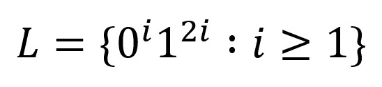

a. Describalo como una expresión regular
Ingresa una cadena siguiendo la expresión regular:
b. Diseñar un AP que acepte el lenguaje de los palíndromos con un número par de símbolos. (esto es, palabras que se leen de igual de izquierda a derecha y de derecha a izquierda), y que tienen por tanto la forma WW^R, donde W^R es la inversa de W (esto es, invertir el orden), en el alfabeto {a, b}. Por ejemplo, las palabras abba, aa y bbbbbb pertenecen a este lenguaje, mientras que aab y aabaa no.
Ingresa una cadena de a y b: